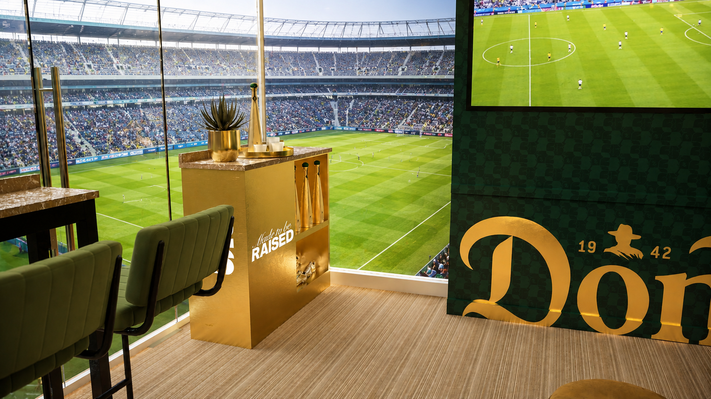
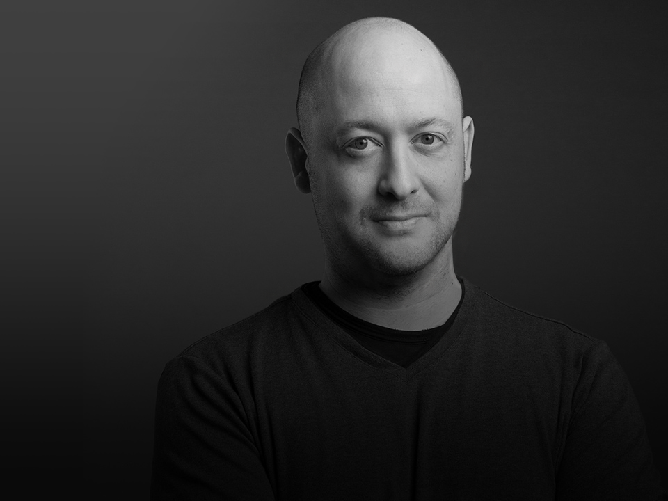

Selected work
Design beyond the render.
Working in 3D makes it possible to test form, scale, layout, and material while the idea is still flexible, before it moves toward production. It gives shape to loose ideas so they can be discussed, adjusted, and made real.
Work
Selected work.
Gallery
A broader visual pass through spaces, displays, products, and process work.
Selected project images from recent spatial, display, product, and process work.

BIO
I use 3D to work through physical design problems.
I’m a 3D designer working across branded environments, display systems, product presentation, and visual workflows.
The work usually starts with something unresolved: a space that needs to be understood, an object that needs to be figured out, or an idea that needs to become clear before it can move forward. I use 3D to work through layout, scale, structure, material, presentation, and the practical decisions that shape the final direction.
Before working independently, I spent years in entertainment advertising and display design, including creative leadership roles on theatrical, retail, out-of-home, and experiential campaigns. That background still informs the work: the idea needs to have visual impact, but it also needs to be specific enough to explain, evaluate, and develop.
- Focus
- Branded environments, display systems, product presentation, visual workflows
- Approach
- Use 3D to clarify ideas, test decisions, and shape practical design direction
- Background
- Entertainment advertising, display design, experiential, and campaign development
- Tools
- Blender, Rhino, Adobe tools, and visual workflow development
CONTACT
Send the loose problem, the strange brief, or the thing you need to figure out.
I’m available for freelance projects, collaborations, and roles involving 3D design, spatial thinking, display systems, and product presentation.